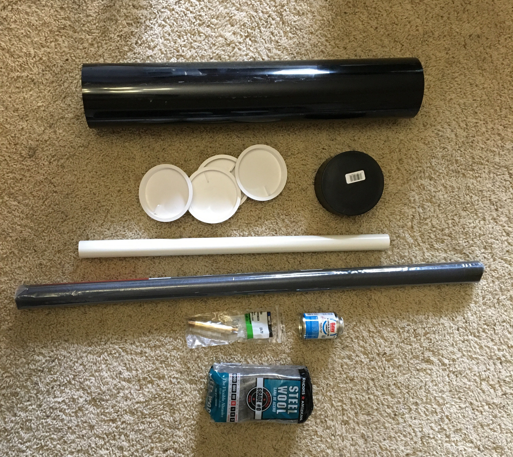
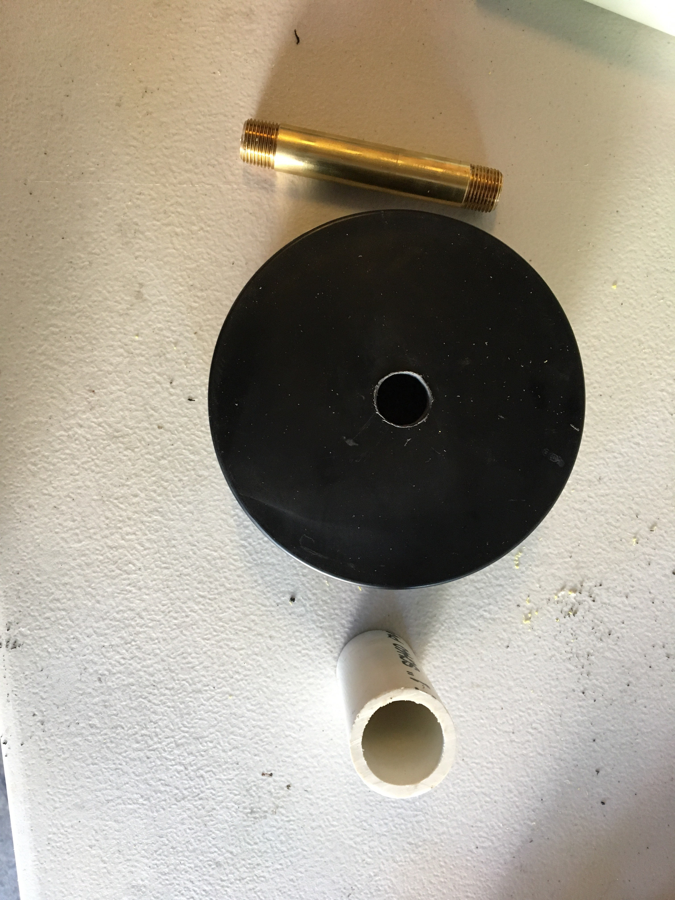
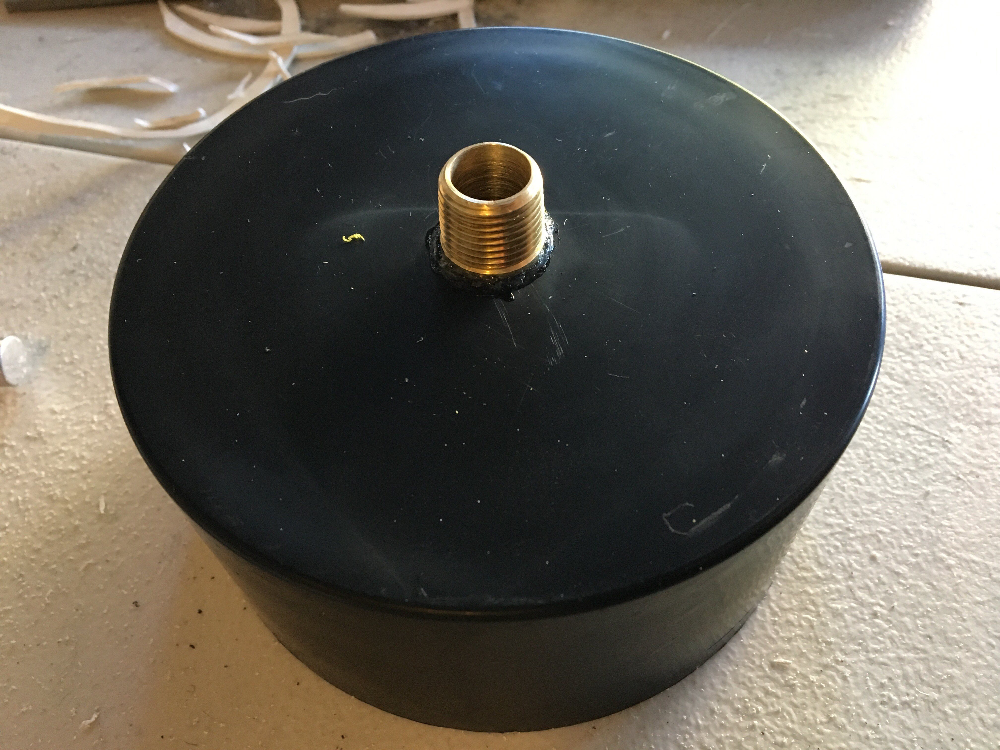
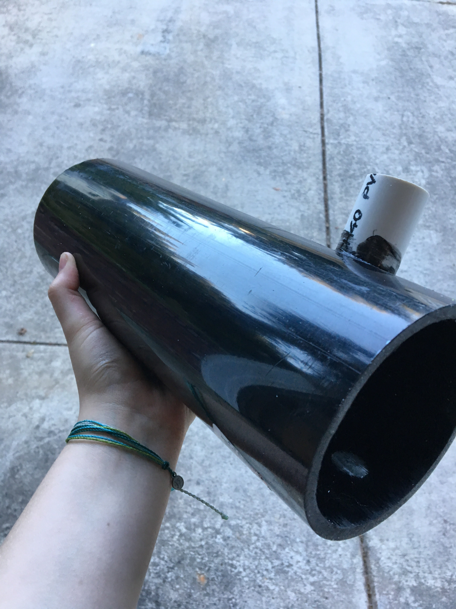
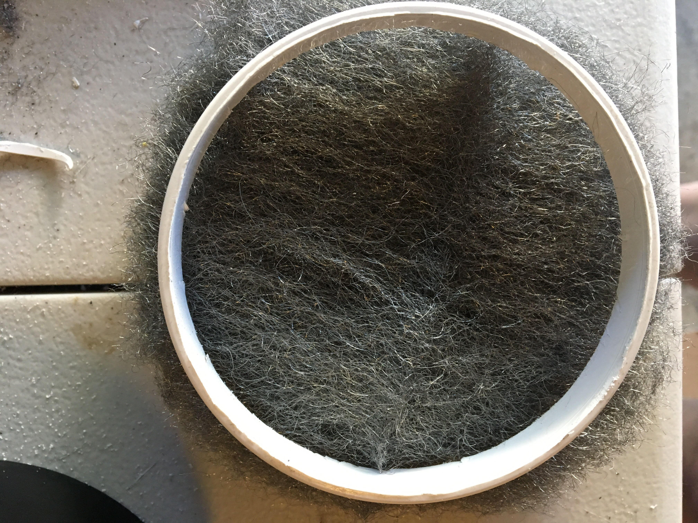
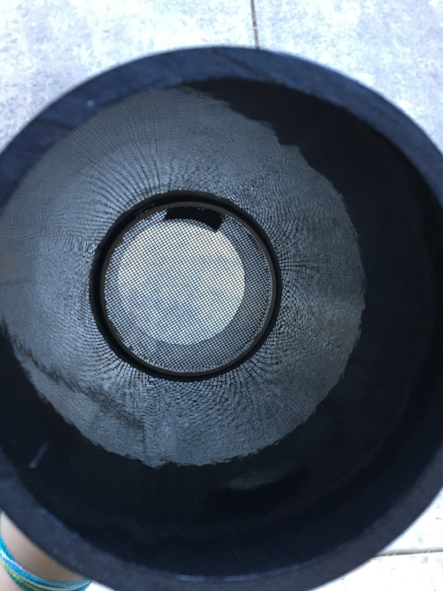
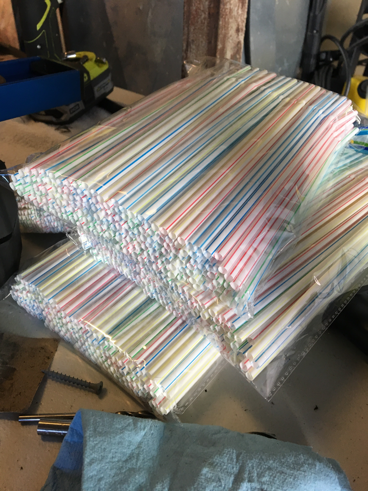
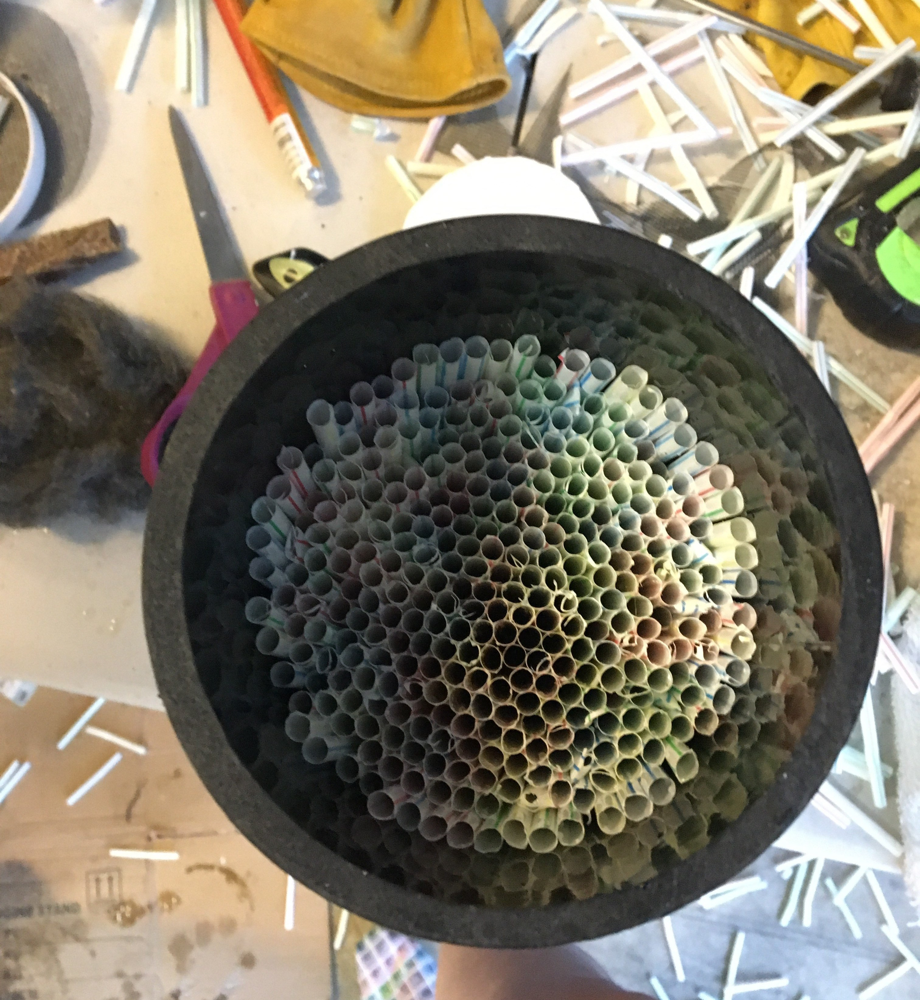
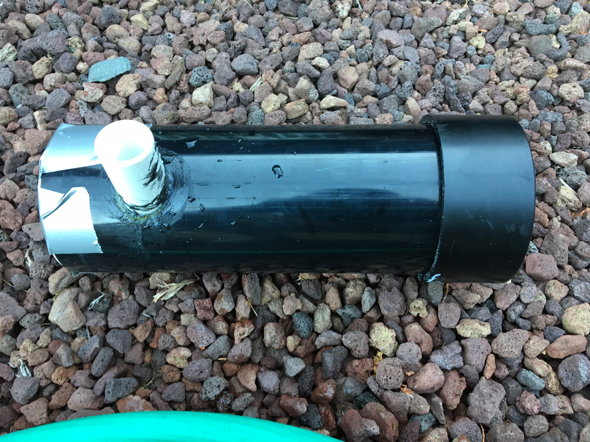
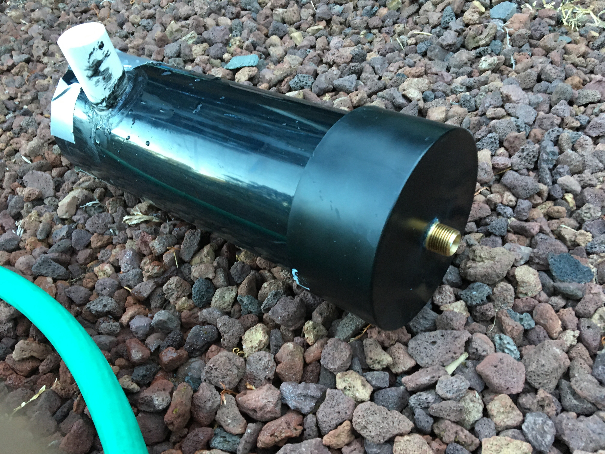

[8.17.17]
Building the Fountain
And so it begins....
I met up with my friend this afternoon to start working on the fountain, boy what a project! We found things that we didn't want to do when making another fountain, things we wanted to keep, and had a good time building a thing.
We loosely followed this Instructables to build the fountain. Here's our materials:
* A 4in diameter 2ft PVC pipe
* A 4in pipe cap
* 4, 4in test plugs
* 1in diameter 1ft PVC pipe
* Window mesh
* 3/8in x 4in brass pipe
* Water sealant epoxy glue stuff
* Steel wool (or scrubbing pads)
* 400+ straws (not pictured)
In all, this came out to be $32.67 at Home Depot. But a lot of this I bought extra (like the 2ft PVC pipe, so we have one pre-cut for our next fountain), and the steel wool....and the tons of window mesh. I'm going to have to find a project that incorporates a lot of that, because we have waaayyy too much left over. Heh.
The first thing we did was saw the 2ft piece
of black PVC into 1ft pieces, as the fountain body is only a foot
long. Next, we needed to get the nozzle ready, which was the 3/8in
brass pipe.

We tapered out the end of the brass nozzle with sand paper so the water flow would come out smooth and easy, and drilled a 3/8in hole in our pipe cap for the nozzle to fit.
For some reason our 3/8in pipe was not actually 3/8 of an inch (not sure why), so we improvised and got the hole big enough for the nozzle to fit. We cut off the nozzle about 1/2in below the ridges and sanded that down.
Then we glued the nozzle in with superglue:

Viola! Very pretty :)
Our next step required the 1in PVC, which is where the hose would fit into. I sawed it into a 3in piece, then we drilled an off-center hole in the big PVC to stick the smaller one into. It was an odd way to do something, when we really could've made the hose attachment on the backside of the fountain. We both decided that's what we'd do next time, along with purchasing a female hose connector instead of just using a PVC pipe.
Finally, we glued the tiny PVC into the big one with some water sealant epoxy glue:

In the next step, I took the 4in test plugs and, with a super sharp razor blade, I cut out the insides. My arm is sore, I must say. After cutting out the inside, I also had to cut off the lip of the test plug. What was left is this white circle:

With this, I fit some window mesh at the bottom of the fountain, right above the hose entrance:

After that was done, we got to an easy part of the job. STRAWS!

We sent my friend's brother and his girlfriend on an emergency run to the dollar store to get us 600 bendy straws. It was lovely. We chopped the straws about 1/2in below the bendy part (since they were a bit too tall), and stuffed them into the PVC pipe on top of the window mesh.

Not all of them were level, but it worked. I unfolded two chunks of steel wool and layered them on top of each other, then cut them in a circle to fit on top of the straws.
We had to use the window mesh, steel wool, and straws to help regulate the water pressure that would be coming through the hose. Using those, it filters the water flow and makes it stream in certain shapes and mostly in one direction, which helps give you the smooth and transparent flow of a laminar fountain.
This is what it all looked like from the top, with the steel wool
and another sheet of window mesh:

(not horribly exciting yet, I know. Just wait!)
Finally, we could start assembling it all together! We stuck the pipe cap on one end (with the nozzle) and on the other, we duct taped a test plug on the end. We didn't want to seal it all the way up yet in case there needed to be any changes to the initial structure.

We turned the water on and hoped for the best....Ahh! It was a great first try at the water flow. We were so excited.


The water flow was a little shaky and not completely clear, and the pressure wasn't as strong (because we hadn't sealed the bottom of the fountain), but it WORKED! WOOHOO! Check it out:
To troubleshoot, we took apart the fountain again and tapered the bottom of the nozzle inside the fountain. We think it's too long, so we gotta figure out a way to chop it down a few quarter inches. We tried some other things, but it obstructed the water flow more than we'd have liked, so it's back to the drawing board on that part. But we made great progress, and I'm proud of us both for getting this project done.
I got the new Raspberry Pi 3 as well, so I can start working on reinstalling and trying all the software I've done in my previous posts to get the tech ready for installation. We've got wiring and soldering in our path...
Cheers!
{thallia}